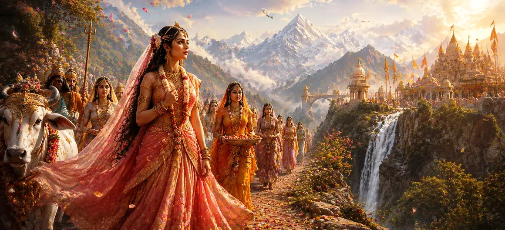

This chapter recounts the events that unfolded when Goddess Sati learned of her father Dakṣa’s grand sacrifice. Despite not receiving an invitation, Sati felt a strong desire to visit her parental home and witness the gathering of gods, sages, and relatives. Lord Shiva warned her about Dakṣa’s hostility and the consequences of attending an event where she and Shiva were not welcomed. Yet Sati’s emotions and sense of family duty compelled her to undertake the journey.
As celestial beings traveled toward Dakṣa’s sacrifice, news of the grand event spread throughout the worlds. Sati observed gods and sages making preparations for the journey and soon learned of the magnificent ceremony organized by her father.
Hearing about the gathering, Sati wished to visit her father's home. She longed to see her mother, sisters, relatives, and the many honored guests who would be present. Although she knew that no invitation had arrived, she felt that a daughter should be free to visit her parents without formal invitation.
Lord Shiva gently advised Sati not to attend the sacrifice. He explained that Dakṣa's pride and resentment had grown so strong that he had deliberately excluded them from the event. Shiva warned that attending a gathering where hostility prevailed could lead to sorrow and humiliation.
Despite Shiva's counsel, Sati remained determined. Believing that family ties and affection would overcome any hostility, she set out for Dakṣa’s sacrifice accompanied by attendants and celestial companions. Her journey carried both hope and uncertainty, as destiny slowly unfolded before her.
Family ties often influence decisions even when challenges and risks are apparent.
The chapter highlights the value of listening to wise guidance before making important decisions.
Certain events become turning points that shape the future in unexpected ways.
Sati’s decision reflected a conflict between heartfelt emotion and spiritual wisdom. While Shiva’s advice was grounded in foresight and understanding, Sati’s longing to reconnect with her family influenced her choice. This tension forms one of the central lessons of the chapter.
As Sati traveled toward the sacrifice, she unknowingly moved toward a moment that would transform her life and alter the course of cosmic events. Her journey became more than a physical voyage; it became a step toward fulfilling a larger divine plan.
Sati’s journey reminds us that emotions and attachments often influence our choices. While love and loyalty are noble qualities, true wisdom lies in balancing them with discernment and spiritual understanding. The chapter encourages devotees to seek guidance, reflect carefully, and trust divine wisdom in moments of uncertainty.
Sati's desire to attend the sacrifice was rooted in her affection for her family and her sense of duty as a daughter. Even though she was aware of Dakṣa's displeasure toward Shiva, she hoped that familial bonds would prevail over resentment. Her decision reflected both her compassionate nature and her unwavering loyalty to those she loved.
As Sati traveled toward the sacrificial grounds, subtle signs hinted that the path ahead would not be easy. Though surrounded by attendants and celestial companions, an unseen tension accompanied the journey. These omens foreshadowed the profound events that were about to unfold and reminded devotees that destiny often reveals itself through subtle warnings.
"Between the call of the heart and the voice of wisdom, destiny often reveals its hidden path."
Continue exploring the sacred events of Sati Khanda as Sati arrives at Dakṣa’s sacrifice and courageously responds to the disrespect shown toward Lord Shiva in the great assembly.